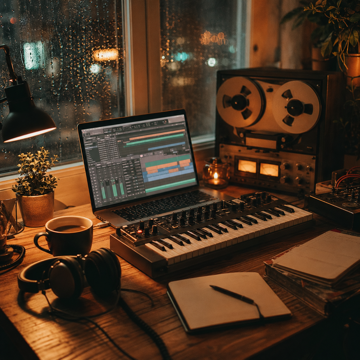
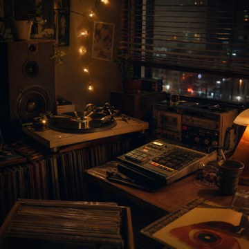

Featured Video
Split Session
A short visual performance built around one of my lofi beats, combining live production footage, layered audio, and a moody late-night atmosphere.
Watch Video
Selected Works
Instrumental Sketches
A small collection of local lofi sketches shaped around jazz chords, soft drums, old-school vocal textures, and simple melodic ideas. Press play to hear the real audio files from the project’s audio folder.

I'm Jhi
1:34
About
Robbie McNitt
Producer
I create jazzy lofi-inspired beats focused on mood, texture, and rhythm. Most of my music starts with a simple chord progression, drum groove, or sample idea, then develops through layering, repetition, and small imperfections that make the track feel more human.
My sound pulls from mellow jazz harmony, old-school rap vocals, dusty drum patterns, and warm digital production. Rather than writing traditional songs, I’m more interested in building short sonic spaces—beats that feel nostalgic, calm, and slightly cinematic.